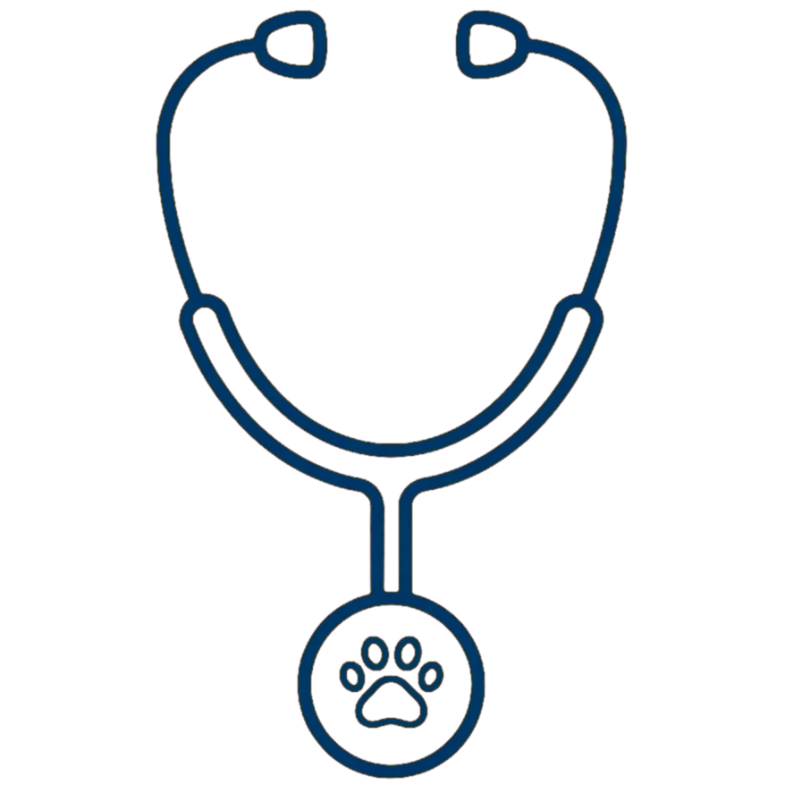
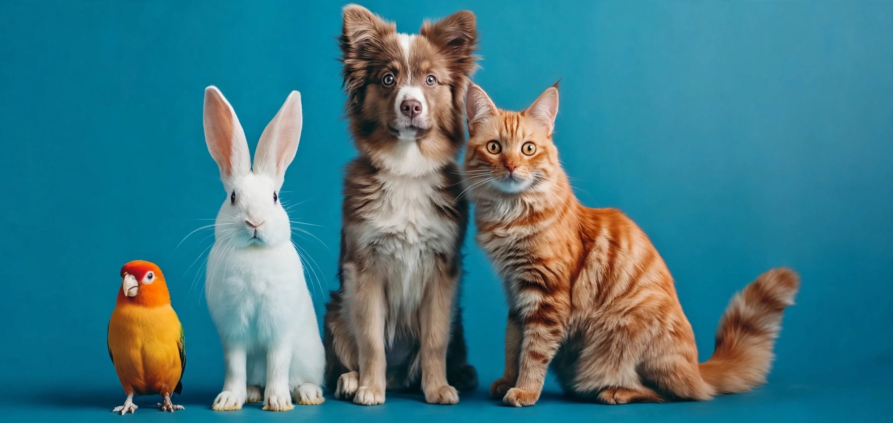
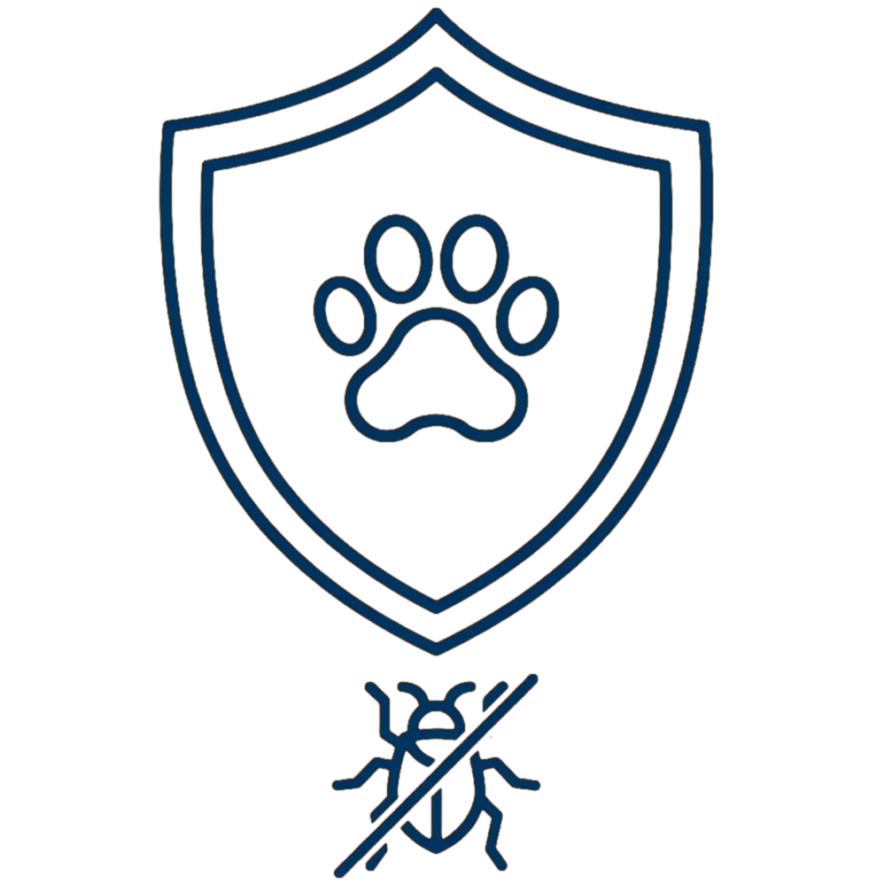
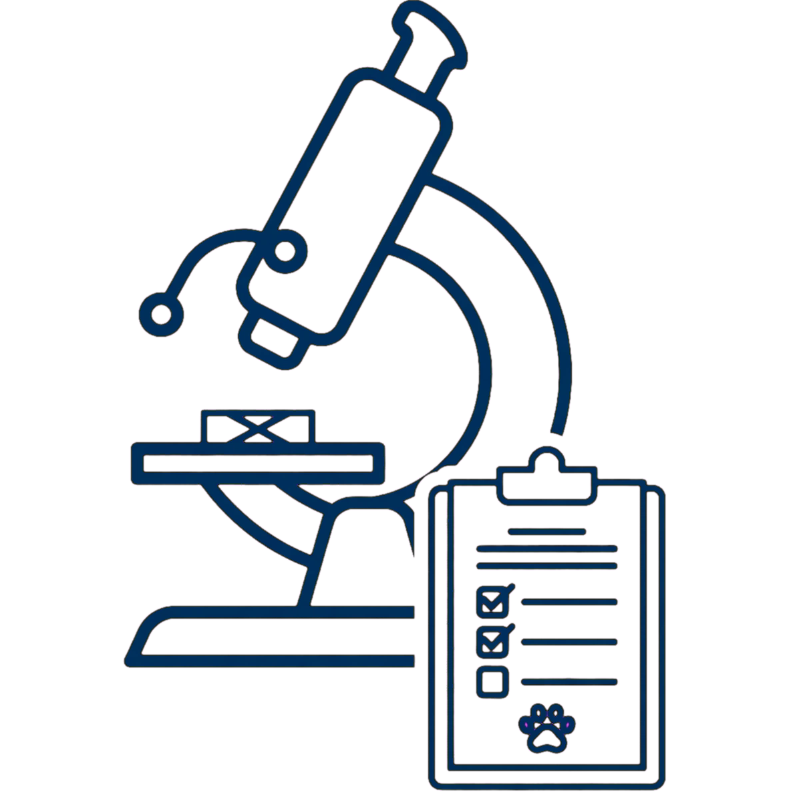
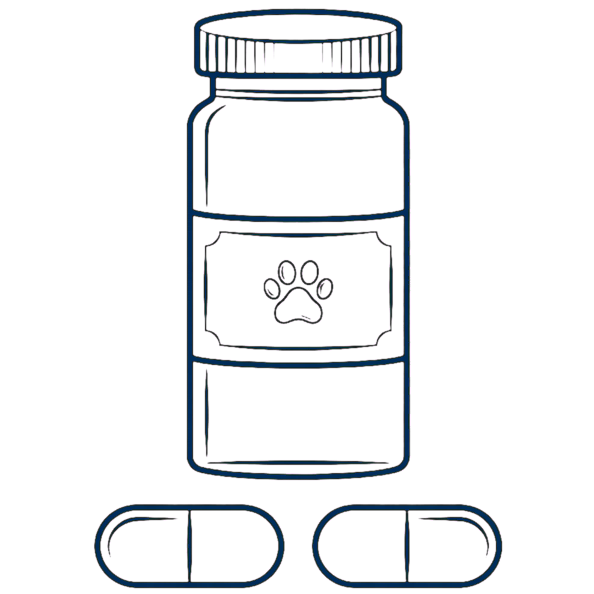
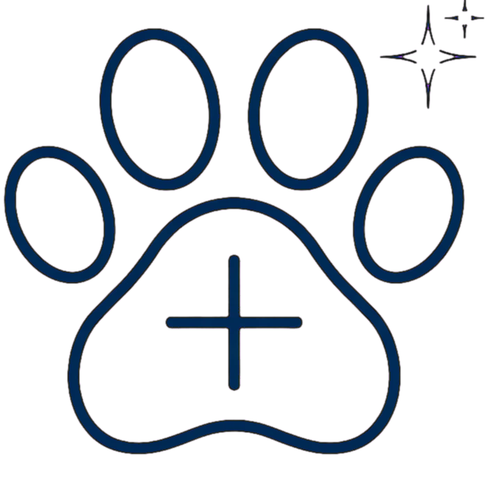
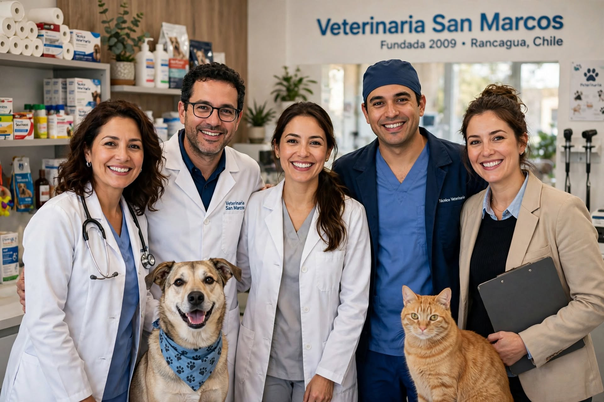
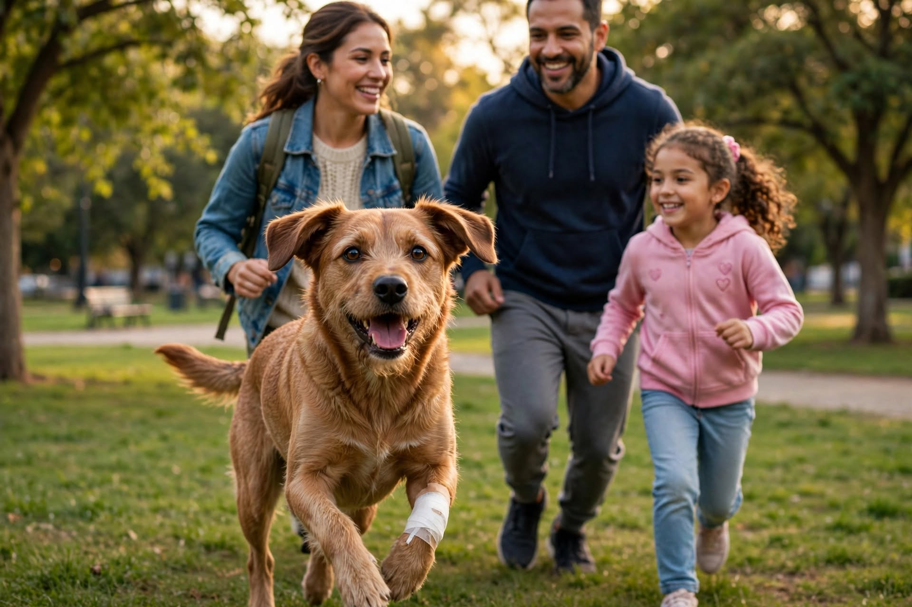
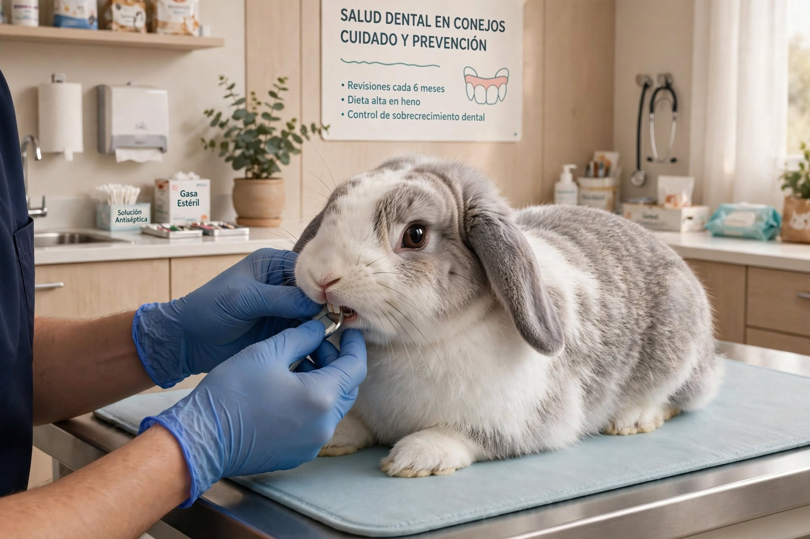

Consultas

Llevamos más de 15 años entregando atención cercana y de calidad a las mascotas. Contamos con médicos veterinarios, técnico veterinario y equipamiento especializado. Sabemos lo importante que es tu mascota para ti, por eso trabajamos con dedicación y cariño en cada visita.






Veterinaria San Marcos es una clínica veterinaria ubicada en Rancagua, Región del Libertador General Bernardo O'Higgins, fundada en 2009. Contamos con un equipo integral dedicado a brindar una atención cercana y profesional, para tus mascotas. A lo largo de estos años, hemos visto crecer la confianza de nuestros clientes, lo que nos motiva a seguir mejorando cada aspecto de nuestra atención, desde la comodidad de nuestras instalaciones hasta la calidez con la que recibimos a cada mascota y su familia.

Laura Claro Hernández – Médica Veterinaria, Universidad de Concepción. Diplomado en Cirugía de Pequeños Animales (Universidad de Chile). Directora clínica y fundadora de Veterinaria San Marcos, con más de 15 años de trayectoria en medicina y cirugía de perros y gatos.
Carmen Martínez Larraín – Médica Veterinaria, Universidad Austral de Chile. Diplomado en Medicina Interna de Pequeños Animales; responsable de consultas generales, vacunación y programas preventivos.
Ignacio Solar Guzmán – Médico Veterinario, Universidad de Concepción. Magíster en Medicina de Especies Exóticas, con dedicación especial a aves y conejos; a cargo de la atención de mascotas no convencionales.
Jorge Vial Peña – Técnico en Enfermería Veterinaria, Universidad Santo Tomás. Encargado de pabellón y apoyo en procedimientos quirúrgicos, cuidados intensivos y toma de exámenes.
Sofía Astorga Zapata – Administradora, Universidad de Talca. Recepcionista y encargada de atención a clientes, agendamiento de horas y gestión administrativa de la clínica.
Firulais llegó a nuestra clínica en estado crítico tras un accidente, con signos vitales alterados y una lesión que requería intervención inmediata. Nuestro equipo médico actuó rápido: en menos de una hora ya estaba en cirugía, estabilizado y bajo constante monitoreo. Los días posteriores fueron clave, con curaciones diarias, controles de dolor y mucho acompañamiento de su familia, que no se separó de él en ningún momento. Hoy, varias semanas después, Firulais corre, juega y mueve la cola como si nada hubiera pasado, un recordatorio de por qué actuar a tiempo puede marcar toda la diferencia.
Ver más
Los conejos son pacientes poco comunes en la consulta diaria, pero cada vez llegan más a nuestra clínica, y sus dientes suelen ser la razón principal. A diferencia de perros y gatos, los dientes de los conejos crecen de forma continua durante toda su vida, así que cualquier desequilibrio en su dieta o alineación dental puede derivar en molestias serias, dejar de comer o incluso infecciones. Señales como babeo, pérdida de apetito o cambios en el pelaje alrededor del hocico son motivo suficiente para pedir hora. Con revisiones periódicas y una dieta rica en fibra, la mayoría de estos problemas se puede prevenir antes de que se conviertan en una urgencia.
Ver más